Quest of the Ringbearer
FARMER MAGGOT'S CROP
LAYOUT
The board represents the area of Maggot's farm immediately surrounding his house. Farmer Maggot's house should be placed 6" from the center of the northern board edge, with his hounds' kennel within 6" of the house as shown on the map. A fenced field, 4" long and 6" wide, should be in the middle of the board, with a couple of exits to the field around the edges. A Stash Marker should be placed 12" from the center of the southern board edge. The rest of the board should be dotted with a few hedges, trees, and bushes.
STARTING POSITIONS
Grip, Fang, and Wolf are deployed touching the kennel. Frodo, Sam, Merry, and Pippin are then deployed within 3" of the Stash Marker. Farmer Maggot will be available later.
OBJECTIVES
The Hobbits are out for quick and tasty plunder and hope to get it from Maggot's crop. Farmer Maggot, however, does not take kindly to those that steal from him and will do what he can to fend off any would-be thieves.
The 'Evil' side wins immediately if they can gather five Plunder Tokens at the Stash Marker. The Good side wins if all the Hobbits flee before this can happen.
SPECIAL RULES
- Definitely not Life or Death
In this Scenario, the Hobbits are wounded in a special way. Frodo, Sam, Merry, and Pippin have 3 Wounds each, but no Might, Will, or Fate. If one of the Hobbits suffers 3 Wounds, the amount of dog bites and bruises they have gathered is enough to make them flee — remove them from the board. Frodo may not use the Ring in this Scenario.
- Farmer Maggot
If any dog suffers a Wound, then Farmer Maggot has been alerted. At the end of each Good Move phase after this condition has been met, and after all other Good models have moved, roll a D6. On a 3+, Farmer Maggot is placed touching his house. Farmer Maggot may not Charge on the turn he arrives but may otherwise act normally.
- The Farmer and his Hounds
No Hobbit may make Strikes against Farmer Maggot or target him with stones. The Hobbits may also not make Special Strikes. Should a dog suffer a Wound, it will not be slain; instead, it is removed from the board and placed touching the kennel. A dog sent to the kennel in this way may do nothing else unless Farmer Maggot touches the kennel, at which point the dog can act as normal. Additionally, Farmer Maggot and his dogs have the Terror special rule in this Scenario.
- Loot and Plunder
If, during the End phase of any turn, any of the Hobbits are within Maggot's field and did not fight or shoot that turn, they immediately gain a Plunder Token — this is a Light Object.
If a Hobbit carrying a Plunder Token is charged, or charges, it will immediately drop the token within 1" of itself. Hobbits may only carry one Plunder Token at a time and may only voluntarily drop them when in base contact with the Stash Marker.
PARTICIPANTS
Good: Farmer Maggot.
'Evil': Frodo Baggins; Samwise Gamgee; Meriadoc Brandybuck; Peregrin Took.
Whilst the Hobbits definitely are not Evil, the fact that they are stealing crops from Farmer Maggot means they will play the role of the Evil force in this Scenario.
Designer's Notes: This Scenario can be played with five people if you wish. In this situation, one player plays as the Good force, and the other players each control one of the Hobbits. When deploying the Hobbits, players will take turns deploying their Hobbit anywhere at least 12" from the crop and 6" from each other. When deployed, a Hobbit will place their own Stash Marker that they will be trying to get Plunder Tokens to. The first Hobbit to get three Plunder Tokens to their Stash Marker wins. If all the Hobbits flee before this can happen, then Farmer Maggot wins.
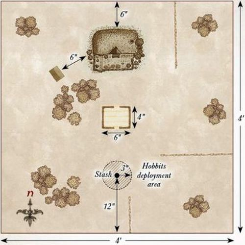
SHORT CUTS MAKE LONG DELAYS
LAYOUT
The board represents a section of the wooded area in the Shire's Eastfarthing. The board should have plenty of trees and bushes dotted around it to give the impression of a densely wooded area, as well as provide plenty of places for the Hobbits to hide from the Ringwraiths. A hedge runs across the board from north to south 12" from the western board edge.
STARTING POSITIONS
The Hobbits start in base contact with the hedge. Gildor is deployed touching the center of the eastern board edge.
One Ringwraith is then deployed touching the center of each of the northern, southern, and western board edges.
OBJECTIVES
Frodo is being hunted by the Black Riders and must slip past them to escape. The Ringwraiths are hunting Frodo, and if they find him, they will not hesitate to kill him and take the Ring.
The Good player wins if Frodo escapes the board via the eastern board edge, or if all the Ringwraiths are slain. The Evil player wins if Frodo is slain.
SPECIAL RULES
- The Search
The Ringwraiths follow the rules for Sentries as detailed in the Middle-earth Strategy Battle Game Rules Manual. Additionally, as the Ringwraiths are not well-suited to seeing in daylight, all Good models gain the Stalk Unseen special rule. If Frodo puts the Ring on, the alarm is immediately raised, and each Ringwraith will move up to 6" towards Frodo if able.
- Lost in the Woods
Until the alarm has been raised, at the start of each of the Hobbits' move, they must take a Courage test. If they fail, the Evil player may move them instead. Once the alarm has been raised, the Hobbits are aware of the danger they are in and may act as normal.
- Cry of the Nazgûl
Once per game, after the alarm has been raised, the Evil player can use this special rule. After Priority has been determined, the Evil player can unleash the screech of the Nazgûl. Until the end of the turn, all Good models reduce their Courage value by 3.
PARTICIPANTS
Good: Frodo Baggins; Samwise Gamgee; Peregrin Took; Gildor Inglorion.
Evil: 3 Ringwraiths with no additional Might, Will, or Fate.
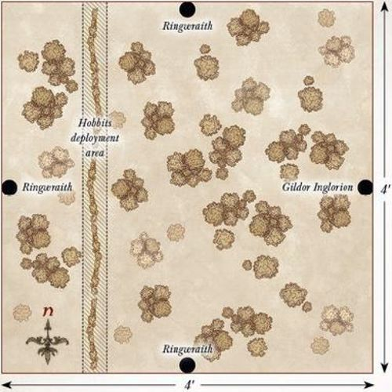
BUCKLEBERRY FERRY
LAYOUT
The board represents the Brandywine River and the surrounding area. The Brandywine runs from north to south, 6" away from the eastern board edge and should be 6" wide. The Buckleberry Ferry should be in the center of the western bank. The area of the board at least 18" from the eastern board edge should be densely packed with trees, hedges, and bushes.
STARTING POSITIONS
The Ringwraiths are deployed within 3" of the centerline of the board that runs from north to south. The Hobbits are then deployed anywhere between 6" and 12" from the western board edge.
OBJECTIVES
Frodo must not let the Ring fall into the Ringwraiths' hands, and must escape them using the Buckleberry Ferry to cross the river.
The Good player wins if Frodo can escape the board via the eastern board edge. The Evil player wins if Frodo is slain.
SPECIAL RULES
- The Search
The Nazgûl follow the rules for Sentries as detailed in the Middle-earth Strategy Battle Game rules manual. If Frodo puts the Ring on, the alarm is immediately raised and each Nazgûl will move up to 6" towards Frodo if able.
- The Ferry
The Ferry can be moved at a rate of D6" per turn, and must have at least one model on it to move. Models on the Ferry while it moves cannot move themselves unless as part of a Heroic Action or Magical Power. The Ferry cannot be moved as part of a Heroic Action.
- The Brandywine
The Brandywine is Deep Water. Additionally, any Hobbit in the water must make a Courage test before rolling on the Swim chart. If the test is failed, the Hobbit must try to swim towards the nearest bank during that turn. The Nazgûl may not enter the water under any circumstances.
- Cry of the Nazgûl
Once per game, after the alarm has been raised, the Evil player can use this special rule. After Priority has been determined, the Evil player can unleash the screech of the Nazgûl. Until the end of the turn, all Good models reduce their Courage value by 3.
PARTICIPANTS
Good: Frodo Baggins; Samwise Gamgee; Meriadoc Brandybuck; Peregrin Took.
Evil: 3 Ringwraiths with no additional Might, Will, or Fate.
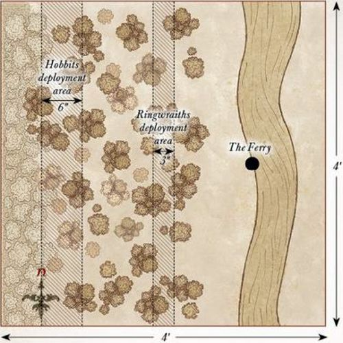
THE OLD FOREST
LAYOUT
The board represents the Old Forest, and as such should be densely packed with trees and other woodland terrain.
STARTING POSITIONS
The Hobbits deploy touching the western board edge as close to the center as possible.
OBJECTIVES
The trees of the Old Forest have started to awaken, and the Hobbits must try to make their way through the forest safely without falling into the traps of these malicious trees.
The Good player wins if all four Hobbits can escape the board via the eastern board edge in the same turn. The Evil player wins if, at the end of any turn, all four Hobbits are unconscious.
SPECIAL RULES
- The Trees are Alive!
At the start of each turn, the Evil player rolls a D6 to see how many of the trees are moving this turn. During the Evil player's Move phase, they may move a number of trees up to the number rolled at the start of the turn. Trees move D6" per turn, have no Control Zone, and use the following profile:
| Mv | F | S | D | A | W | C |
|---|---|---|---|---|---|---|
| 6" | 2/5+ | 3 | 3 | 1 | 1 | 2 |
Trees that lose a fight can still be struck, but will not be slain if they suffer any Wounds. Instead, for each Wound a Tree suffers, it will Back Away 1" from its attackers (if able).
- Knocked Unconscious
Any Hobbit that suffers its last Wound and would be slain will be knocked unconscious rather than being removed as a casualty. Treat the model as being under the effects of the Paralyse Magical Power.
PARTICIPANTS
Good: Frodo Baggins; Samwise Gamgee; Meriadoc Brandybuck; Peregrin Took.
Evil: None. No, really!
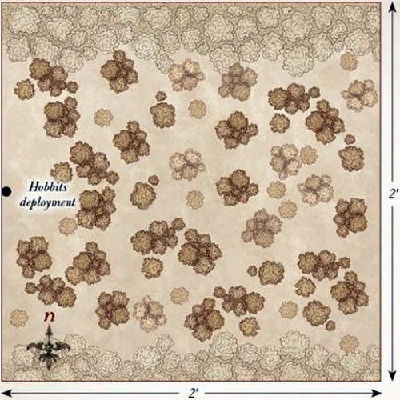
FOG ON THE BARROW-DOWNS
LAYOUT
The board represents the Barrow-downs, with four barrows, each placed 12" from the corner of a different board edge. The western board edge should be dotted with trees representing the edge of the Old Forest, and the rest of the board should have occasional rocks or bushes dotted around.
STARTING POSITIONS
The Hobbits deploy anywhere between 12" and 24" of the western board edge. Each Barrow-wight then deploys touching a different barrow.
OBJECTIVES
Lost in the swirling mists, the Hobbits are aware that something is not right. They must try to escape the clearing before whatever evil lurks in the fog can reach them.
The game lasts until one side completes their objective. The Good side wins if three Hobbits, including Frodo, move off the board via the eastern board edge. The Evil side wins if they can sacrifice any two Hobbits. Additionally, if Frodo is sacrificed, then the Evil side wins.
SPECIAL RULES
- The Barrow
Whilst within 3" of a Barrow, a Barrow-wight may spend a single point of Will each turn without reducing their store of Will.
- Fog on the Barrow-downs
Hobbit models can only see up to 6". Additionally, while the fog remains on the board, before each Hobbit model moves, roll a D6. On a 2+, the Good player may move them as normal. On a 1, the Evil player will move them instead, though they cannot make them Charge an enemy model. Might may not be used to influence this roll.
- Ho! Tom Bombadil!
During each Hobbit model's Move phase, if that Hobbit has seen a Barrow-wight, they may call for Tom Bombadil, even if they are in combat. Whenever a Hobbit calls for Tom, roll a D6. On a 5+, Tom Bombadil will enter the board from the western board edge at the start of the next Good Move phase. As soon as Tom Bombadil enters the board, the fog lifts. At the end of each turn after Tom has arrived, roll a D6. On the roll of a natural 6, Goldberry enters the board in the same manner as Tom.
- Sacrifice
Any Hobbit that suffers its last Wound and would be slain will instead be paralyzed rather than being removed as a casualty. Treat the model as being under the effects of the Paralyse Magical Power. A Barrow-wight may drag a paralyzed Hobbit at full speed but will immediately drop them if Charged. Should a Hobbit recover from paralysis while being dragged, the Good player may place them within 1" of where they were. Should a Barrow-wight start its move in base contact with both a Barrow and a paralyzed Hobbit, they can attempt to sacrifice them. Roll a D6, on a 4+ the Hobbit has been sacrificed and removed as a casualty. The Barrow-wight may then act as normal.
PARTICIPANTS
Good: Frodo Baggins; Samwise Gamgee; Meriadoc Brandybuck; Peregrin Took; Tom Bombadil; Goldberry.
Evil: 4 Barrow-wights.
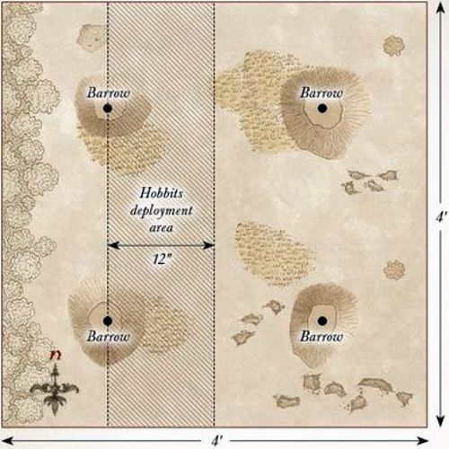
NAZGÛL IN BREE
LAYOUT
The board represents the village of Bree. Along the western board edge runs the walls of the village, with the gates in the center of the western board edge and a wall 12" from the gates. In the center of the board are the doors to the Prancing Pony, facing towards the western board edge. The rest of the board should have plenty of buildings, walls, and other features you may find around the village.
STARTING POSITIONS
Aragorn, the Hobbits, and Barliman start the game inside the Prancing Pony and do not start on the board.
Harry Goatleaf is deployed 3" from the center of the western board edge. The Ringwraiths will enter the board during the first turn.
OBJECTIVES
The Nazgûl's hunt for the Ring has brought them to Bree, and they will tear the village apart to find it. Frodo must escape Bree to prevent the Ring from falling into the hands of the Ringwraiths. The Good side wins if Frodo, Aragorn, and at least two other Hobbit models escape the board via the eastern board edge. The Evil side wins if Frodo is slain.
SPECIAL RULES
- Move Quietly
Good models may not declare a Heroic March in this Scenario. The Good models within the Prancing Pony exit the inn via the door during the Good player's first Move phase.
- Hunting the Ringbearer
The Ringwraiths enter the board at the start of the Evil player's first Move phase via the gates; they may Charge on the turn they arrive. From the second turn onwards, roll a D6 for each Ringwraith before they move. On a 1-3, the Evil player moves that Ringwraith, and on a 4+ the Good player moves that Ringwraith. This condition ends immediately if the Heroes have been spotted.
- Spotting the Heroes
If, after both sides have moved, a Ringwraith can draw Line of Sight to a Good model within 12" (with the exception of Harry Goatleaf), then the Heroes have been spotted. If the Line of Sight is obscured, the Ringwraith must roll a D6 to determine if they can see the model. On a 5+, that model has been seen, and the Heroes have been spotted.
- Lure of the Ring
Before Frodo tries to move, he must take a Courage test.
If he passes, everything is fine; however, if he fails, he must put the Ring on. Frodo suffers an additional -1 to this Courage test for each Ringwraith within 12" after the first. Frodo gains a bonus of +1 to this test for each friendly model in base contact. If Frodo puts the Ring on, the Heroes immediately count as being spotted and each Ringwraith may immediately move towards Frodo if able.
PARTICIPANTS
Good: Frodo Baggins; Samwise Gamgee; Meriadoc Brandybuck; Peregrin Took; Aragorn — Strider; Barliman Butterbur; Harry Goatleaf.
Evil: 4 Ringwraiths on horse with no additional Might, Will, or Fate.
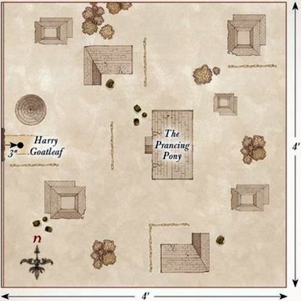
WEATHERTOP
LAYOUT
The board represents the ruined watchtower of Amon Sûl, which has a diameter of 12" and should occupy the center of the board. The rest of the board can have occasional piles of rubble, trees, and hedges dotted around.
STARTING POSITIONS
Frodo is deployed in the center of Weathertop, with the other Hobbits surrounding him. The Ringwraiths are then deployed touching the edge of Amon Sûl. Aragorn is not deployed on the board at the start of the game.
OBJECTIVES
The Nazgûl have come to claim the Ring for their master; only by driving them off can Frodo and his companions hope to keep the Ring. The Evil side wins if Frodo is slain. The Good side wins if all of the Ringwraiths are slain before this can happen.
SPECIAL RULES
- Flaming Brands
Aragorn, Merry, Pippin, and Sam have flaming brands in addition to their normal weapons. If a Ringwraith loses a Duel roll against a model with a flaming brand, they will retreat D6" directly away from that model. Additionally, Aragorn may choose to use his flaming brand as a throwing weapon. If it hits, do not roll To Wound; instead the model is immediately Set Ablaze.
Once Aragorn has thrown his flaming brand, he may not use it for the remainder of the Scenario.
- Aragorn
From the second turn onwards, roll a D6 at the end of each Good Move phase. On a 4+, Aragorn has arrived; place him in base contact with any edge of Amon Sûl. Aragorn may not Charge but may otherwise act normally.
- Cry of the Nazgûl
Once per game, the Evil player may use this special rule.
Until the end of the turn, all Good models reduce their Courage value by 3. If this is used before Aragorn has arrived, then Aragorn will automatically arrive the next turn.
PARTICIPANTS
Good: Frodo Baggins; Samwise Gamgee; Meriadoc Brandybuck; Peregrin Took; Aragorn — Strider.
Evil: The Witch-king of Angmar with Morgul Blade; 4 Ringwraiths, each with no additional Might, Will, or Fate.
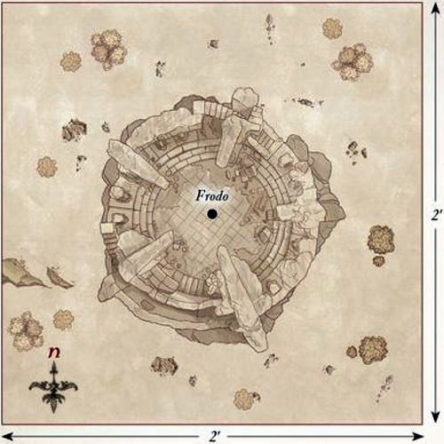
FLIGHT TO THE FORD
LAYOUT
The board represents the River Bruinen and the surrounding area. The river should be 6" wide and 6" from the eastern board edge. In the center of the river is the ford, which should be 6" wide. The rest of the board should be dotted with trees, hedges, and other such undergrowth.
STARTING POSITIONS
The Good player deploys Arwen within 6" of the western board edge. Frodo starts as a Passenger on Asfaloth. The Evil player then deploys the Witch-king and any four Ringwraiths within 6" of the western board edge, but not within 1" of Arwen. The remaining Good models enter the board via the western board edge during the first turn. The remaining Ringwraiths will be available as the game goes on.
OBJECTIVES
Frodo must reach the safety of Rivendell before the wound suffered by the Morgul Blade corrupts him, but cannot do so with the Ringwraiths so near. The Ringwraiths must slay the Hobbit and reclaim the Ring. The Good player wins if all nine Ringwraiths are slain. The Evil player wins if Frodo is slain. If both players achieve their objective in the same turn, the game is a draw.
SPECIAL RULES
- Protection of Imladris
Good models that are on the eastern side of the river count as having the Fortify Spirit Magical Power cast upon them, even if their Will points are reduced to 0.
- Weakened by the Chase
Frodo, Sam, and Aragorn start the game with no Might points in their store; Frodo also starts the game with no Fate due to the wounds of the Morgul Blade. The Ringwraiths start the game with only 3 Will points each, while the Witch-king starts with 5 Will points. Additionally, the Ringwraiths' horses are exhausted and so will move D6+4" each turn. However, if a 6 is rolled for their movement, after they have moved the horse will collapse from exhaustion and the rider must take a Thrown Rider test.
- The Wrath of Bruinen
At the start of the game, the river is treated as Deep Water and the ford is open ground; however, Cavalry models may only move at half speed over the ford. Once Asfaloth has stepped foot in the river, the Good player may roll a D6 at the start of each following turn. On a 4+ Elrond is ready to unleash the power of the Bruinen, which the Good player can release at any point in any following Good Move phase. When the Bruinen is unleashed, all models in the river (Good and Evil) are removed from the game as casualties. From that point on, the river is treated as impassible terrain and the ford is treated as difficult terrain. Arwen may not use the Wrath of Bruinen Magical Power in this Scenario.
- The Ringwraiths
From the second turn onwards, roll a D6 for each Ringwraith that has not yet arrived. On a 4+ they may enter the board from any point on the northern or southern board edges via the rules for Reinforcements. However, they may not enter the board east of, or in, the Bruinen. If a Ringwraith rolls a 1 to arrive, it has suffered an accident on its journey and is instead removed as a casualty.
PARTICIPANTS
Good: Frodo Baggins; Samwise Gamgee; Meriadoc Brandybuck; Peregrin Took; Aragorn — Strider; Arwen Undómiel on Asfaloth.
Evil: The Witch-king of Angmar on horse, and 8 Ringwraiths on horse, each with no additional Might, Will, or Fate.
Designer's Notes: If you wish, you can play this Scenario with Glorfindel instead of Arwen. In this situation, Frodo is mounted on Asfaloth, even though he would not normally be able to do so, and is deployed as Arwen would normally be. Glorfindel will enter the board in the same manner as Aragorn and the Hobbits.
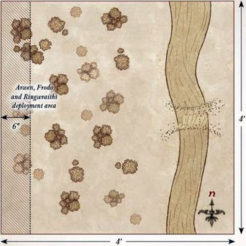
THE PASS OF CARADHRAS
SET-UP
For this mini-game, you will need a pack of ordinary playing cards. Separate the cards into suits; shuffle the hearts and diamonds together and deal them face-down as shown above — this is the Pass of Caradhras. Give the spades and clubs to the Evil player, which makes up their hand.
STARTING POSITIONS
The Fellowship will move onto any card on the western edge on the first turn.
OBJECTIVES
The Fellowship are trying to cross the Misty Mountains on the way to Mordor. However, Saruman plans to bring down the mountain on top of them. The Good player wins if they can move any five members of the Fellowship off the board via the eastern edge. The Evil player wins if any five members of the Fellowship are buried.
GAME TURN
At the beginning of each turn, the Evil player places one card from their hand face-down — this is where Saruman is trying to bring down the mountain. The Good player then moves each member of the Fellowship to another card in any direction. Members of the Fellowship each move one space, except Legolas, who may move two.
The Evil player then reveals their card. Any member of the Fellowship on a card with the same number as the one played, including picture cards, suffers a Wound; the card is then discarded. The Hobbits have two Wounds each; all other members of the Fellowship have three Wounds. Once a model is reduced to zero Wounds, they have been buried in the snow and are removed from the game.
The turn then ends and the next turn begins.
EXTRA RULES
At the end of each turn, the Evil player can play a card from their hand to bring down more of the mountain. The Evil player may choose a card in the playing area that matches the number they played, including picture cards, that has no models currently on it. That card is then buried, and models cannot move over it. Cards in the eastern-most column cannot be chosen. Only one card per column may be buried in this manner.
PARTICIPANTS
Good: Frodo Baggins with Sting and Mithril Coat; Samwise Gamgee; Meriadoc Brandybuck; Peregrin Took; Gandalf the Grey; Aragorn — Strider with bow; Legolas Greenleaf; Gimli, son of Glóin; Boromir of Gondor with shield.
Evil: None!
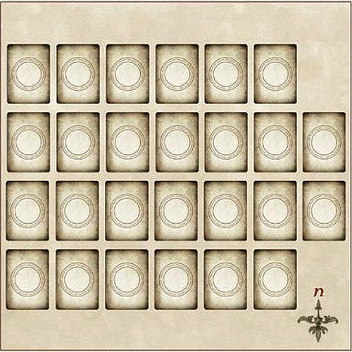
WARGS IN THE NIGHT
LAYOUT
The board represents the lands at the base of the Misty Mountains. As such, it should be dotted with a selection of varied terrain such as trees, rocks, and hills.
STARTING POSITIONS
The Good player deploys their models within 3" of the center of the board. The Evil player then deploys the Warg chieftain touching the center of any board edge. They then deploy six Wild Wargs touching each of the northern, eastern, and western board edges.
OBJECTIVES
The Wargs are hungry and have attacked the Fellowship in search of a fresh kill. The Fellowship must fend them off for long enough to make the pack retreat. The Evil side wins if they can slay any five members of the Fellowship. The Good player wins if the game ends before this can happen. If Frodo dies, then the best result the Good player can achieve is a draw.
SPECIAL RULES
- Fending off the Pack
From turn 11 onwards, if Priority is ever drawn, the game immediately ends.
- Never-ending Pack
At the start of each turn, any Evil Warrior models that have previously been slain may enter the board at the end of the Evil Move phase via the rules for Reinforcements, from a board edge chosen by the player with Priority. A different board edge may be chosen for each Warg.
- Fearless
All Evil models gain the Fearless special rule.
PARTICIPANTS
Good: Frodo Baggins with Sting and Mithril Coat; Samwise Gamgee; Meriadoc Brandybuck; Peregrin Took; Gandalf the Grey; Aragorn — Strider with bow; Legolas Greenleaf; Gimli, son of Glóin; Boromir of Gondor with shield; Bill the Pony.
Evil: Wild Warg Chieftain; 18 Wild Wargs.
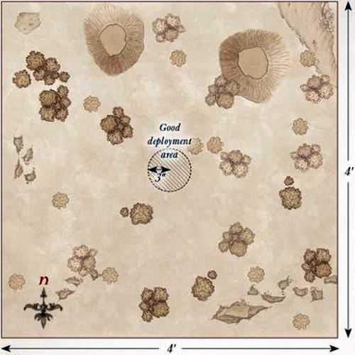
THE GATES OF MORIA
LAYOUT
The board represents the walls outside Moria and the pool that contains the Watcher in the Water. The walls of Moria run along the eastern board edge, with the gates in the center of the eastern board edge. The southwestern corner of the board is the Watcher's pool. The rest of the board should have the odd tree and pile of rocks dotted around.
STARTING POSITIONS
The Evil player deploys the Watcher in the Water within 6" of the southwestern corner of the board. The Good player then deploys Frodo anywhere touching the pool. The other Hobbits are deployed 6" away from Frodo, but not within the pool. The remaining Good models are deployed touching the gate to Moria.
OBJECTIVES
The Fellowship must escape the clutches of the Watcher in the Water by entering the Mines of Moria. The Watcher is simply after its next meal and will attempt to devour any members of the Fellowship it can get its tentacles on. The Good player wins if at least five members of the Fellowship escape the board via the gates to Moria, including Frodo. The Evil player wins if five or more Good models are slain. Additionally, if Frodo is slain, the Evil player automatically wins.
SPECIAL RULES
- Caught by Surprise
The Evil player has Priority on the first turn. Additionally, Good models cannot use Magical Powers, or declare a Heroic Move or Heroic Shoot during the first turn.
- It won't Die!
Whenever the Watcher in the Water suffers a Wound, it will immediately retreat D3" away from the model that wounded it in a direction chosen by its controlling player. Wounds caused in the Shoot phase whilst the Watcher in the Water is in combat will force the Watcher in the Water to leave combat. Additionally, the Watcher in the Water cannot be slain in this Scenario; whenever it would suffer its final wound, it will instead retreat D6" away from the model that wounded it in a direction chosen by its controlling player.
- The Shallows
The Pool is shallow water. However, each time a Good model starts its Move within the Pool, they must roll a D6. On a 1, the model is knocked Prone and cannot move any further that turn. On a 2-5, the model counts as moving through difficult terrain. On a 6, the model may move as normal. Legolas gains a bonus of +1 to this roll. Additionally, as the water is too shallow, the Watcher in the Water may not use its Dragged to the Depths special rule.
PARTICIPANTS
Good: Frodo Baggins with Sting and Mithril Coat; Samwise Gamgee; Meriadoc Brandybuck; Peregrin Took; Gandalf the Grey; Aragorn — Strider with bow; Legolas Greenleaf; Gimli, son of Glóin; Boromir of Gondor with shield.
Evil: The Watcher in the Water.
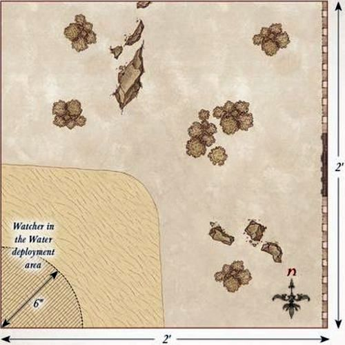
BALIN'S TOMB
LAYOUT
The board represents Balin's Tomb. In the center of the southern board edge is the doorway to the tomb. There is a raised edge that runs all the way around the board, which is 3" wide. In the center of the board is the tomb itself, and the well is placed 9" from the center of the northern board edge. A selection of pillars should be placed as shown on the map, as well as two trapdoors on the raised area in the center of the eastern and western board edges.
STARTING POSITIONS
The Good player places the Fellowship within 6" of the center of the board. The Evil player then places the Goblins within 6" of the doorway to the tomb. The Cave Troll will be available later on.
OBJECTIVES
The Fellowship have been ambushed by Goblins and must now fight them off to survive. The Good player wins if at least five members of the Fellowship, including Frodo, are still alive when the game ends. The Evil player wins if five or more Good models are slain. Additionally, if Frodo is slain, the Evil player automatically wins.
The game lasts for 10 turns.
SPECIAL RULES
- The Goblin Tide
During the end of each of the Evil player's Move phases, any Goblin Warrior models that were previously slain may re-enter the board from one of the entry points on the board. Up to one Goblin may enter the board from each trapdoor (so long as no Good model is standing on it), up to two Goblin models may enter from the well, and any others may enter via the doorway. Any Goblin models that cannot enter the board may try again next turn. Models that arrive in this manner may Charge on the turn they arrive.
- They have a Cave Troll!
During the Evil player's fourth Move phase, the Cave Troll may enter the board from the doorway and may Charge the turn it arrives. During the turn it enters the board, the Cave Troll may move 'through' friendly Goblin models. Any Goblin model moved through in this manner suffers a Strength 3 hit, and any Goblin model that the Cave Troll finishes its move on is automatically slain.
PARTICIPANTS
Good: Frodo Baggins with Sting and Mithril Coat; Samwise Gamgee; Meriadoc Brandybuck; Peregrin Took; Gandalf the Grey; Aragorn — Strider with bow; Legolas Greenleaf; Gimli, son of Glóin; Boromir of Gondor with shield.
Evil: 2 Moria Goblin Captains; 24 Moria Goblins: 8 with shield, 8 with spear, 8 with Orc bow; 1 Cave Troll with two-handed hammer and Troll chain.
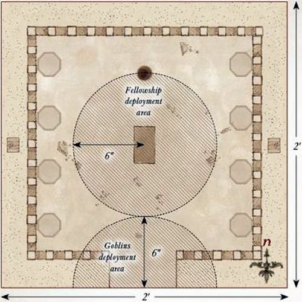
ESCAPE FROM DWARROWDELF
LAYOUT
The board represents the raised walkways of Dwarrowdelf. The walkways should stretch from the east to the west side of the board as shown on the map, and each walkway should be 12" long and 2" wide. The walkways descend from the western to the eastern board edge. The exact layout of the walkways is given on the map above.
STARTING POSITIONS
The Good player deploys their models on the walkways and within 6" of the western board edge. The Evil player doesn't deploy any models; they will be available as the game goes on.
SPECIAL RULES
- Goblin Pursuit
At the end of each Evil Move phase, the Evil player rolls a D6 to determine how many Goblins have caught up with the Fellowship: the Goblin Captains count as three Goblins each, and the Cave Troll counts as five Goblins. They then select Goblins from those not in play and roll a further D6. On a 1, the chosen models move on from the western board edge. On a 2-5 the Goblins move on from the eastern board edge. On a 6, the Evil player may select any walkway that doesn't have any Good models on it and deploy the Goblins on that walkway.
- Unstable Realm
Any model that leaves the walkways for any reason (except when a Good model escapes the board) will automatically be slain as they fall into the depths of Moria. Additionally, if the roll for Priority is ever tied, then the Evil player may place a Chasm Marker on one of the walkways. Chasm Markers should stretch across a walkway and be 1" wide. These can be jumped as normal, but any model that rolls a 1 will fall into the depths of Moria and be slain. Chasm Markers cannot be placed on models or within 3" of another Chasm Marker.
OBJECTIVES
The Fellowship are trying to flee Moria and escape the pursuing Goblins who are trying to kill them.
The game lasts until one force achieves their objective. The Good player wins if at least five members of the Fellowship escape the board via the eastern board edge, including Frodo. The Evil player wins if five or more Good models are slain. Additionally, if Frodo is slain, the Evil player automatically wins.
PARTICIPANTS
Good: Frodo Baggins with Sting and Mithril Coat; Samwise Gamgee; Meriadoc Brandybuck; Peregrin Took; Gandalf the Grey; Aragorn — Strider with bow; Legolas Greenleaf; Gimli, son of Glóin; Boromir of Gondor with shield.
Evil: 2 Moria Goblin Captains; 24 Moria Goblins: 8 with shield, 8 with spear, 8 with Orc bow; 1 Cave Troll with two-handed hammer and Troll chain.
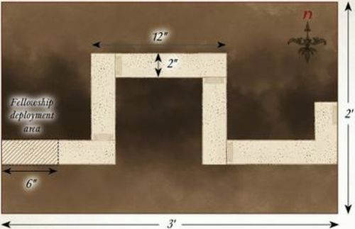
THE BRIDGE OF KHAZAD-DÛM
LAYOUT
The board represents the Bridge of Khazad-dûm and the surrounding area. There is a chasm 6" wide running from north to south, 6" away from the eastern board edge. The Bridge of Khazad-dûm crosses this chasm and should be 2" wide. The stairs to the exit are on the southeastern board edge. The rest of the board should have the occasional rock pile or pillar dotted around.
STARTING POSITIONS
The Good player deploys their models between 6" and 12" from the western board edge, and at least 18" from both the northern and southern board edges. The Evil player then splits the Goblins into two equal halves and deploys one half within 12" of the northern board edge, and the other half within 12" of the southern board edge. No Goblins may be deployed east of the chasm.
OBJECTIVES
The Fellowship must escape Moria, and Gandalf must destroy the Bridge of Khazad-dûm in order to prevent any of the Goblins from pursuing them.
The game lasts until one force achieves their objective. The Good player wins if at least five members of the Fellowship escape the board via the stairs, including Frodo, and the Bridge of Khazad-dûm has been destroyed. The Evil player wins if five or more Good models are slain, or if the bridge has not been destroyed. Additionally, if Frodo is slain, the Evil player automatically wins.
SPECIAL RULES
- The Balrog
At the end of each Evil player's Move phase, the Evil player rolls a D6. If the score is equal to or less than the current turn number, then the Balrog arrives. It moves onto the board from the center of the western board edge via the rules for Reinforcements.
- The Bridge of Khazad-dûm
Gandalf may target the Bridge of Khazad-dûm with the Sorcerous Blast Magical Power, providing he is standing on it. If successfully cast, do not follow the normal rules for the Magical Power; instead, roll a D6 and consult the chart below. Might may not be used to influence this roll.
| D6 | Result |
|---|---|
| 1 | No Effect. |
| 2-5 | The bridge is damaged but still standing. You may add 1 to further rolls on this chart. These modifiers are cumulative. |
| 6 | The bridge is destroyed. Any models on the bridge are removed as a casualty. |
PARTICIPANTS
Good: Frodo Baggins with Sting and Mithril Coat; Samwise Gamgee; Meriadoc Brandybuck; Peregrin Took; Gandalf the Grey; Aragorn - Strider with bow; Legolas Greenleaf; Gimli, son of Glóin; Boromir of Gondor with shield.
Evil: The Balrog; 2 Moria Goblin Captains; 24 Moria Goblins: 8 with shield, 8 with spear, 8 with Orc bow.
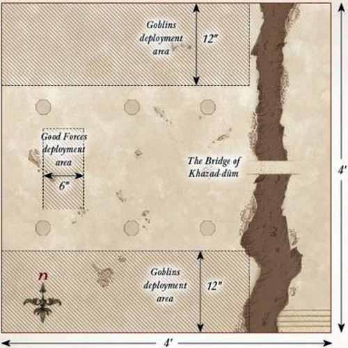
LOTHLÓRIEN
LAYOUT
The board represents the edges of Lothlórien. There should be a river running from north to south that is 6" wide and 6" from the western board edge. There is a 4" wide ford in the center of the river forming a good place to cross. The rest of the board should be dotted with trees, rocks, and bushes.
STARTING POSITIONS
The Good player deploys the Fellowship within 6" of the eastern bank of the river. The Evil player then deploys the Goblins anywhere west of the river. All other models are kept aside for later in the game.
OBJECTIVES
The Fellowship are being chased by the Goblins and Wargs and must reach the safety of Lothlórien to escape.
The game lasts until one player has completed their objective. The Good player wins if four or more members of the Fellowship, including Frodo, escape the board via the eastern board edge. The Evil player wins if four or more members of the Fellowship are slain. Additionally, if Frodo is slain, the Evil player automatically wins.
SPECIAL RULES
- Hidden in the Trees
At the start of the game, the Good player places six 25mm markers numbered 1-6 in the eastern half of the board; these markers may not be placed within 6" of another. As soon as any model moves within 12" of the eastern board edge, the Good player rolls a D6 and deploys the Elves within 6" of the corresponding marker. The Elves may not Charge on a turn in which they arrive but may otherwise act normally.
- Weary from the Chase
Good models may not use Heroic March in this Scenario.
- The Wargs
At the end of each Evil Move phase, D6 Warg models may enter the board via the rules for Reinforcements, from a board edge chosen by the player with Priority. A different board edge may be chosen for each Warg.
PARTICIPANTS
Good: Frodo Baggins with Sting and Mithril Coat; Samwise Gamgee; Meriadoc Brandybuck; Peregrin Took; Aragorn - Strider with bow; Legolas Greenleaf; Gimli, son of Glóin; Boromir of Gondor with shield; Haldir with Elf bow; 6 Wood Elf Warriors with Elf bow.
Evil: 2 Moria Goblin Captains; Wild Warg Chieftain; 24 Moria Goblins: 8 with shield, 8 with spear, 8 with Orc bow; 18 Wild Wargs.
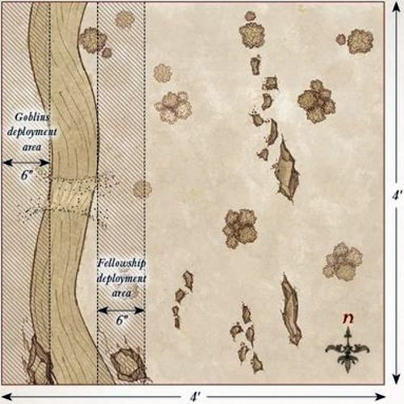
ARAGORN'S STAND
LAYOUT
The board represents Amon Hen and the Seeing Seat. The Seeing Seat should be placed on a hill 6" from the center of the northern board edge (see map). The rest of the board should be densely packed with trees, bushes, and other undergrowth.
STARTING POSITIONS
The Good player deploys Aragorn and Frodo in base contact with the Seeing Seat. The Evil player then deploys Lurtz and half of the Uruk-hai Scouts within 3" of the northern board edge. The other models will be available as the game goes on.
OBJECTIVES
The Uruk-hai have come to claim the Ring for Saruman and to kill all who stand in their path. Should either Frodo or Aragorn fall, all shall be lost.
The Good player wins if Frodo can escape the board via the southern board edge while Aragorn is still alive. If either Frodo or Aragorn is slain, the Evil player wins.
SPECIAL RULES
- To the Rescue!
At the end of each Good Move phase, the Good player rolls a D6 and adds the turn number. If the total is 10 or more, then Legolas and Gimli have arrived and may move onto the board from any board edge via the rules for Reinforcements.
- Scouting Uruk-hai
At the end of each Evil Move phase, the Evil player rolls a D6 for each Uruk-hai model not currently on the board. On a 4+, that model may move onto the board from a board edge chosen by the player with Priority via the rules for Reinforcements. Previously slain Warrior models may also return to the board in this manner.
PARTICIPANTS
Good: Frodo Baggins with Sting and Mithril Coat; Aragorn – Strider with bow; Legolas Greenleaf; Gimli, son of Glóin.
All Good models have an Elven Cloak.
Evil: Lurtz; Uruk-hai Scout Captain with two-handed weapon; 24 Uruk-hai Scouts: 8 with shield, 8 with Uruk-hai bow, 8 with no additional wargear.
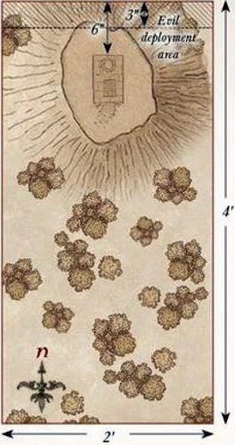
BOROMIR'S REDEMPTION
LAYOUT
The board represents the woodland around Amon Hen, and as such should be dotted with plenty of trees, bushes, and rocks.
STARTING POSITIONS
The Good player deploys Boromir in the center of the board and then deploys Merry and Pippin within 3" of him. The Evil player then deploys their models anywhere within 3" of either the northern or western board edges.
OBJECTIVES
The Uruk-hai have been tasked with capturing the Halflings and taking them to Isengard, something that Boromir is desperately trying to prevent.
The Evil player wins if they have carried both Merry and Pippin off the board via any table edge when the game ends. If, when the game ends, only one Hobbit has been carried off the board, the game is a draw. In any other result, the Good player wins.
SPECIAL RULES
- Random Game Length
From the 11th turn onwards, if the roll for Priority is ever a draw, then the game ends immediately. If playing this Scenario as part of a campaign, ignore this rule; instead, this Scenario will last for the same number of turns as the Aragorn's Stand Scenario lasted.
- Find the Halflings!
Evil models may not target a Hobbit with shooting attacks. Additionally, any Hobbit that loses its final Wound is not slain but knocked unconscious; they count as being under the effects of the Paralyse Magical Power. Uruk-hai models treat Hobbit models as Light Objects.
PARTICIPANTS
Good: Boromir of Gondor; Meriadoc Brandybuck; Peregrin Took.
All Good models have an Elven Cloak.
Evil: Uruk-hai Scout Captain with two-handed weapon; 18 Uruk-hai Scouts: 6 with shield, 6 with Uruk-hai bow, 6 with no additional wargear.
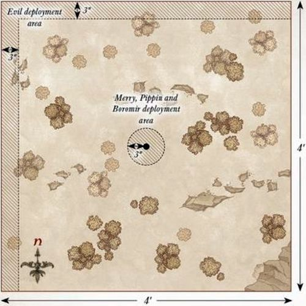
BREAKING OF THE FELLOWSHIP
LAYOUT
The board represents the woodland around Amon Hen, and as such should be dotted with plenty of trees, bushes, and rocks.
STARTING POSITIONS
The Good player deploys Boromir 6" from the center of the western board edge, and then deploys Aragorn, Legolas, and Gimli within 6" of the eastern board edge. The Evil player deploys Lurtz in the center of the board. They then deploy the Uruk-hai Scout Captain and nine Uruk-hai Scouts anywhere within 12" of Boromir. The rest of the Uruk-hai Scouts are deployed within 12" of Aragorn, Legolas, and Gimli.
OBJECTIVES
With Frodo and Sam having gone, and Merry and Pippin captured, all that matters now is for the remaining members of the Fellowship to survive.
The game lasts until one force is wiped out. The Good player wins if at least two Good Hero models have survived when the Uruk-hai have been wiped out. The Evil player wins if the Good player fails to complete their objective.
SPECIAL RULES
- Last Stand
Boromir starts the game with 3 Might points and only a single Wound. Additionally, Boromir may re-roll any dice in a Duel roll and any dice when rolling To Wound.
- Shield Throw
Once per game, Lurtz can choose to use his shield as a throwing weapon. This has a Strength of 4, and any Man-sized (or smaller) model hit by the shield is automatically knocked Prone. Once Lurtz has thrown his shield, he no longer carries it and cannot use it for the remainder of the battle.
PARTICIPANTS
Good: Aragorn — Strider with bow; Legolas Greenleaf; Gimli, son of Glóin; Boromir of Gondor.
All Good models have an Elven Cloak.
Evil: Lurtz with shield; Uruk-hai Scout Captain with two-handed weapon; 24 Uruk-hai Scouts: 8 with shield, 8 with Uruk-hai bow, 8 with no additional wargear.
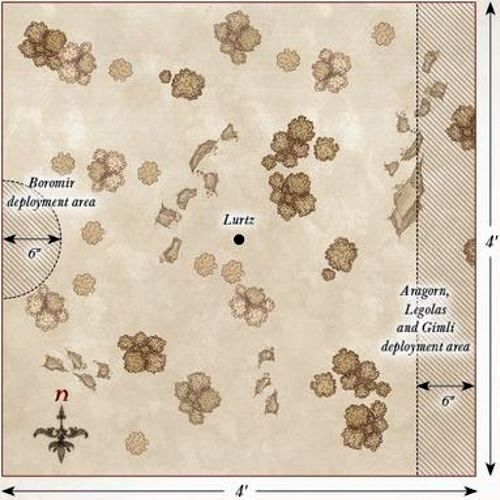
AMBUSH AT AMON HEN
LAYOUT
The board should be densely packed with trees and other foliage. The western board edge represents the River Anduin and should have two boats placed at the point marked X. The Seeing Seat should be placed in the eastern half of the board as per the map.
STARTING POSITIONS
Aragorn and Frodo start the game in base contact with the Seeing Seat, while Legolas and Gimli can be placed anywhere within 6" of the northeast corner of the board. Merry, Pippin, and Boromir are placed between 6"-12" of the boats and no more than 1" away from each other.
The Evil player then places the Uruk-hai Scout Captain and 12 Uruk-hai Scouts within 6" of the Seeing Seat, and Lurtz and the other 12 Uruk-hai Scouts within 12" of Boromir, but no closer than 6".
Finally, Sam is set up anywhere on the board at least 12" away from any other member of the Fellowship.
OBJECTIVES
Frodo has made his decision; he is going to leave the Fellowship and journey to Mordor alone. The Uruk-hai are under strict orders to deliver the Hobbits to Saruman, alive and unspoiled.
The game ends as soon as Frodo leaves the board. If Frodo escapes the board by moving into base contact with the boats, the Good player is the winner. If Frodo is captured by the Uruk-hai, the Evil player is the winner.
The Evil player can claim a draw even if Frodo escapes the board, so long as they have captured any two of the remaining Hobbits.
SPECIAL RULES
- Find the Halflings!
Should a Hobbit suffer their final Wound, instead of being slain they will recover a single Wound and be knocked out instead — treat them as being subject to the Paralyse Magical Power. Any Evil model may carry a knocked-out Hobbit as if he were a Heavy Object (see page 110 of the Middle-earth Strategy Battle Game Rules Manual). Should any Good model end its move in base contact with a knocked-out Hobbit, they will automatically revive them and they may act as normal, although they will start their move in the Prone position. Should any Evil model leave any table edge while carrying a knocked-out Hobbit, with the exception of the western edge, the Evil player is considered to have captured that Hobbit.
- The Legions of Isengard
At the end of each Evil Move phase, roll a D6 for each Evil Warrior that has previously been slain. On a 4+, that model may enter play anywhere along the northern, eastern, or southern board edges.
PARTICIPANTS
Good: Frodo Baggins with Sting and Mithril Coat; Samwise Gamgee; Meriadoc Brandybuck; Peregrin Took; Aragorn — Strider with bow; Legolas Greenleaf; Gimli, son of Glóin; Boromir of Gondor.
All Good models have an Elven Cloak.
Evil: Lurtz; Uruk-hai Scout Captain; 24 Uruk-hai Scouts: 8 with no additional equipment, 8 with shield, 8 with Uruk-hai bow.
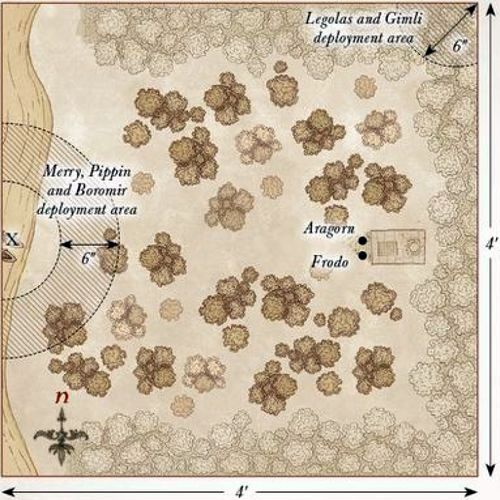
THE TAMING OF SMÉAGOL
LAYOUT
The board represents the rocky terrain of Emyn Muil, and so should be covered with rocky outcrops, some large and some small.
STARTING POSITIONS
The Good player deploys Frodo and Sam in the center of the board. The Evil player then deploys Sméagol (though he is very much Gollum at this point) anywhere touching the eastern board edge.
OBJECTIVES
Gollum has tracked the Hobbits since Moria, and now has the opportunity to strike and steal the Ring. If they become aware of Gollum, the Hobbits will try to subdue him.
The Good player wins if Gollum is subdued. The Evil player wins if Gollum kills Frodo and reclaims the Ring. If Gollum is subdued but Sam has been slain, the game is a draw.
SPECIAL RULES
- Sleeping Hobbits
The Hobbits start the game Prone and may not move until they are disturbed. As Gollum approaches, there is a chance he will wake the Hobbits. Roll a D6 before Gollum moves. If the number rolled is higher than the distance between him and the Hobbits, or a 6 is rolled, he has disturbed them and the Hobbits immediately stand up and act normally from this point onwards. If Gollum attacks a sleeping Hobbit, the Hobbits have been woken and may act normally from this point onwards.
- Subduing Gollum
If Gollum suffers his last Wound then he is subdued rather than slain. However, Gollum cares not for the wellbeing of the Hobbits and will try to kill them as normal.
- Sting
Each time Gollum loses a Fight against Frodo, he must make a Courage test. If the test is failed, Gollum surrenders to the Hobbits and is automatically subdued.
PARTICIPANTS
Good: Frodo Baggins with Sting, Mithril Coat, and Elven Cloak; Samwise Gamgee with Elven Cloak.
Evil: Sméagol.
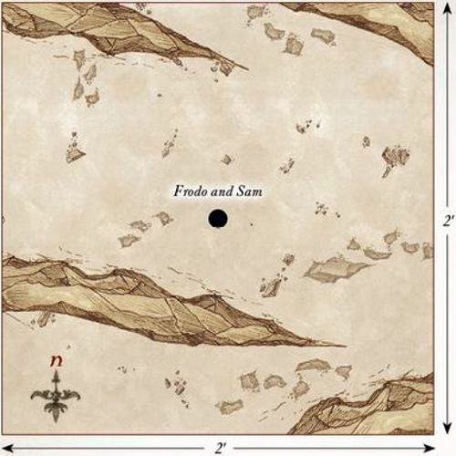
THE DEAD MARSHES
LAYOUT
The board represents the Dead Marshes. There should be six areas of marshland around the board, one of which is in the center. The rest of the board should have a selection of bushes, hedges, and rocky outcrops dotted around.
STARTING POSITIONS
The Good player deploys Frodo, Sam, and Sméagol touching the center of the western board edge. The Evil player deploys one Dead Marsh Spectre in the center of each piece of marshland and then deploys the Ringwraith touching the center of the eastern board edge.
OBJECTIVES
With the Ringwraith overhead, Frodo and his companions must cross the Dead Marshes without being noticed if they wish to keep the Ring away from the Nazgûl.
The Good player wins if Frodo can escape the board via the eastern board edge. The Evil player wins if Frodo is slain.
SPECIAL RULES
- Hunt the Ringbearer
All Evil models start the game as Sentries. However, if a model would normally spot a Good model, they will not raise the alarm. Instead, only that model will have been alerted to their presence and may act normally; the others will remain as Sentries.
- Don't follow the Lights
If a Good model is moved into any of the marshland as a result of a Spectre's 'A Fell Light is in Them' special rule, they must roll a D6. On a 1 or 2, the model succumbs to the powers of the Spectres and falls into the marsh; they are now Prone. A model that has succumbed to the Spectres cannot act in any way, and if they remain in the marsh during the End phase of the following turn, they are removed as a casualty. A friendly model can rescue a model that has succumbed by ending their Move in base contact with them; the rescued model may then act as normal.
- Call of the Ring
If Frodo puts the Ring on, then the Ringwraith will no longer be a Sentry and will act as normal.
PARTICIPANTS
Good: Frodo Baggins with Sting, Mithril Coat, and Elven Cloak; Samwise Gamgee with Elven Cloak; Sméagol.
Evil: Ringwraith on Fell Beast with 0 Might, 10 Will, and 0 Fate; 6 Dead Marsh Spectres.
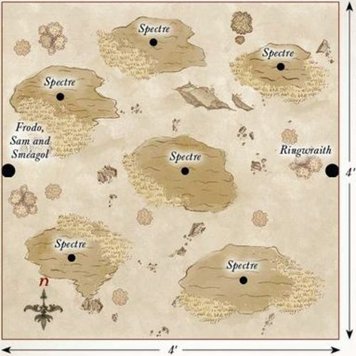
AMBUSH AT ITHILIEN
LAYOUT
There should be lots of hedges, trees, and bushes dotted around the board, although ideally not heavily impeding movement across the center of the board. The terrain should be denser along the northern and southern board edges.
STARTING POSITIONS
The Evil player deploys the two Mûmakil touching the western board edge as shown. They may then deploy their remaining models anywhere within 6" of either Mûmak. The Good player may then split their force in half — one half containing 12 Rangers and Faramir, and the remaining models in the other half. The Good player then deploys Faramir's half anywhere within 6" of the southern board edge, and then their remaining models within 6" of the northern board edge.
OBJECTIVES
The Haradrim are attempting to journey to Mordor to join with Sauron's armies before the assault on Minas Tirith. The more of them that can make it to the Black Gate, the stronger the Dark Lord will be. Faramir has noted that the lumbering Mûmakil pose the greatest threat to Gondor and has tasked his Rangers to see to their downfall.
The game lasts until there are no Mûmakil left on the board. The Evil side wins if both Mûmakil can move off the board via the eastern board edge. The Good player wins if they can slay both of the Mûmakil. If only one Mûmak has managed to escape the board, the game is a draw.
SPECIAL RULES
- Unseen Hunters
At the start of the game, before the first Priority is rolled, each Good model may make a 'free' shooting attack as if it were the Shoot phase. Additionally, for the first three turns of the game, all Good models gain the Stalk Unseen special rule and may re-roll any 1s To Wound when making a shooting attack.
PARTICIPANTS
Good: Faramir, Captain of Gondor with bow; Madril, Captain of Ithilien; Damrod, Ranger of Ithilien; Frodo Baggins with Sting, Mithril Coat, and Elven Cloak; Samwise Gamgee with Elven Cloak; Sméagol; Anborn, Ranger of Ithilien; Mablung, Ranger of Ithilien; 24 Rangers of Gondor: 16 with no additional equipment, 8 with spear.
Evil: 2 War Mûmakil of Harad each with 12 Haradrim Warriors with bow; 24 Haradrim Warriors with spear.
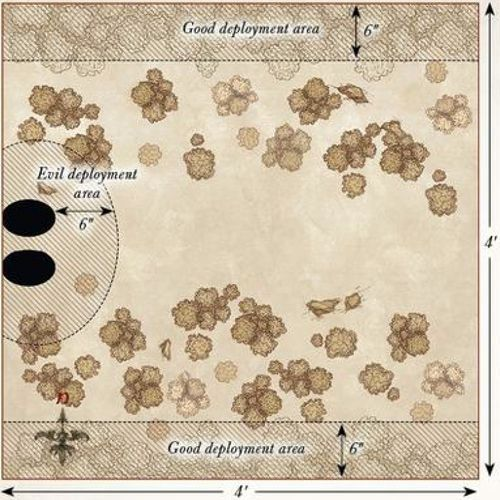
OSGILIATH
LAYOUT
The board represents the ruined city of Osgiliath. There should be three ruined buildings spread evenly across the board. The rest of the board should be littered with other smaller ruins, piles of rubble, and rocks.
STARTING POSITIONS
The Good player deploys Faramir, Frodo, Sam, and Sméagol 12" from the center of the western board edge. The Good player then deploys the rest of their models anywhere on the board at least 9" away from the northern, eastern, or western board edges. The Evil player then deploys the Orcs anywhere within 3" of the northern, eastern, or western board edges.
The Ringwraith will be available later.
OBJECTIVES
Frodo must escape Osgiliath or the Ring may be captured. The Orcs do not know of the presence of the Ringbearer and are more concerned with capturing the city. The game lasts until Frodo is no longer on the board. The Good player wins if Frodo can escape the board via the eastern board edge. The Evil player wins if they control more of the ruined buildings than the Good side at the end of the game. If both players achieve their objective, the game is a draw; however, if Frodo is slain, the Evil side automatically wins.
SPECIAL RULES
- Capturing Buildings
A building is considered to be controlled by a player if they have more models wholly within the building than their opponent. Control of a building can change multiple times over the course of the battle.
- Nazgûl!
The Ringwraith will automatically arrive at the end of the Evil player's third Move phase from the western board edge via the rules for Reinforcements. Once per game, during the Priority phase, the Nazgûl can let out a terrifying shriek, which will reduce all Good models' Courage value by 3 until the end of the turn. Additionally, with Frodo beginning to fall more under the influence of the Ring, he cannot risk putting it on. If Frodo puts on the Ring, he is removed as a casualty.
- Reinforcements
Each time a Warrior model is removed as a casualty, roll a D6. On a 1-3, that model takes no further part in the game. On a 4+, that model may re-enter the board at the end of its side's next Move phase via the rules for Reinforcements. Good models enter from the southern board edge. Evil models may enter from the northern, eastern, or western board edges.
- Poor Sméagol
Sméagol is under the control of the Good player; however, Good models may not benefit from any Heroic Action that Sméagol declares.
PARTICIPANTS
Good: Faramir, Captain of Gondor with bow; Madril, Captain of Ithilien; Damrod, Ranger of Ithilien; Anborn, Ranger of Ithilien; Mablung, Ranger of Ithilien; Frodo Baggins with Sting, Mithril Coat, and Elven Cloak; Samwise Gamgee with Elven Cloak; Sméagol; 13 Warriors of Minas Tirith: 4 with shield, 4 with spear & shield, 4 with bow, 1 with banner; 12 Rangers of Gondor: 4 with spear, 8 with no additional wargear; 6 Osgiliath Veterans: 2 with shield, 2 with spear, 2 with bow.
Evil: 3 Orc Captains with shield; 1 Ringwraith on Fell Beast with 2 Might, 10 Will, and 2 Fate; 37 Orc Warriors: 12 with shield, 12 with spear, 6 with Orc bow, 6 with two-handed weapon, 1 with banner.
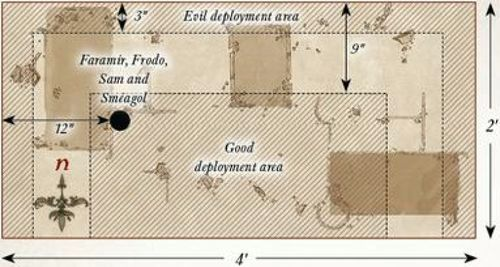
SMÉAGOL'S TREACHERY
SET-UP
For this mini-game, you will need a pack of ordinary playing cards. Separate the hearts from the rest of the deck and shuffle them. Lay them out face-down in a single line as shown — this is the Path.
Next, shuffle the remaining three suits together to form the playing deck, and then deal a hand of five cards to each player.
STARTING POSITIONS
Sam starts the game to the left of the western-most card, while Gollum starts the game to the right of the eastern-most card as shown. Frodo is placed on the central card.
OBJECTIVES
Both Sam and Gollum are trying to convince Frodo to believe them and be rid of the other. Whichever of them reaches Frodo first is the winner.
GAME TURN
To decide who goes first, both players roll-off, re-rolling any ties, with whoever scored the highest going first. Players then alternate turns until there is a winner.
On a player's turn, they may do one of three things:
- Attempt to Move:
When a player attempts to move their character, they will try to move one card along the Path closer to Frodo. They play a card from their hand face-up. Then, making sure they don't see it themselves, they show their opponent the card they are trying to move to.
Their opponent must then say if the card played is higher or lower than the card they are trying to move to. If the card they played is equal to or higher than the card shown, they flip it face-up and move their character onto it; they then take another go. If the card they played is lower than the card shown, they place it back face-down without looking, do not move, and their turn immediately ends.
It is important to be completely honest when playing this game, for the benefit of both players.
- Discard Hand:
If a player wishes, they can discard all of the cards in their hand and then draw a fresh hand of five cards from the playing deck. Their turn then ends.
- Draw New Hand:
If a player has no cards in their hand, they may then draw a new hand of five cards. Their turn then ends.
TIPS
It is important to remember that since the cards each player is moving along belong to a single suit, there will only be one of each card on the Path. If you have seen the King on your opponent's side of the Path, you know there won't be one on your side.
Additionally, you will often know what is on your opponent's side of the Path, and they will know what is on your side. This can lead to a very interesting game where both players try to figure out the best possible cards to play each turn.
PARTICIPANTS
Good: Samwise Gamgee.
Evil: Gollum.
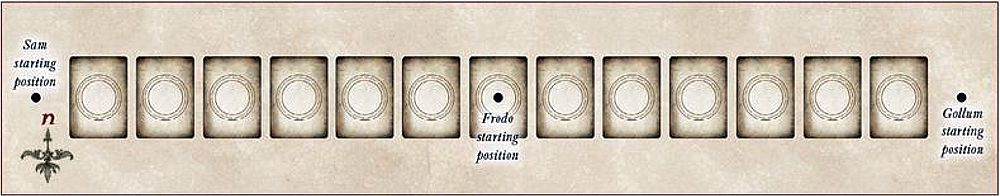
SHELOB'S LAIR
LAYOUT
The board represents part of the high pass of Cirith Ungol, and as such should be covered in various rocky outcrops, rock piles, and large rocks that are impassable.
STARTING POSITIONS
The Good player deploys Frodo in the center of the board, and then deploys Sam touching the center of the western board edge. The Evil player deploys Shelob touching the center of the southern board edge. They then deploy Sméagol anywhere on the board at least 12" away from any other model.
OBJECTIVES
To survive, the Hobbits must somehow fend off the vile creature, or they will soon find themselves as Shelob's next meal.
The game lasts until one side has completed their objective. The Good player wins if Shelob is slain or, more likely, flees.
SPECIAL RULES
- Samwise the Brave
Sam will automatically pass all Courage tests in this Scenario. Additionally, as Sam carries the Phial of Galadriel, he causes Terror.
- Not here, not so close to the Eye!
Frodo may not put on the Ring in this Scenario.
- Shadowed Hunter
Shelob may not spend Will points to pass Courage tests in this Scenario.
- Sting
Strikes from Sting will automatically Wound Shelob. If Frodo is slain, place a 25mm marker where he fell. If Sam moves into base contact with this marker, he may pick up and wield Sting from that point on.
PARTICIPANTS
Good: Frodo Baggins with Sting, Mithril Coat, and Elven Cloak; Samwise Gamgee with Elven Cloak.
Evil: Shelob; Sméagol.
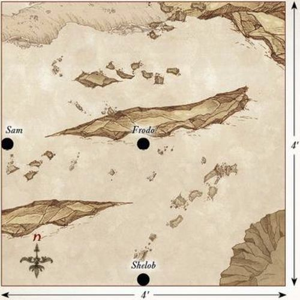
CIRITH UNGOL
LAYOUT
The board represents the Tower of Cirith Ungol. The board is made up of two fortress walls, one outer and one inner, and the tower itself. A rock face runs along the northern and eastern board edges. The outer wall is 3" wide and runs 3" away from the western and southern board edges. The gates to Cirith Ungol should be in the south-western corner (see map). The inner wall should be 3" high, 3" wide, and 6" away from the outer wall; it should have a selection of stairs up to it from the ground. On top of this inner wall should be the main tower, the base of which should be 9" wide and 9" long (as shown on the map), and should have two doorways in the side that are accessible from the inner wall. The top of the tower base should have two trapdoors on it that the doors will lead to. The main tower is placed atop the tower base (see map), and should have a door on it facing towards the south-western board edge.
STARTING POSITIONS
Sam is deployed touching the south-western board edge.
A marker representing the Mithril Coat is placed on the inner walls as close to the center of the board as possible.
The players then alternate placing a model anywhere within the walls of Cirith Ungol, starting with the Evil player.
Models may not be placed within 2" of another model or within 1" of the Mithril Coat.
OBJECTIVES
The Orcs and Uruk-hai have descended into rioting over the Mithril Coat, both wanting to claim the shiny shirt.
The game lasts until either Sam is slain, or he reaches Frodo at the top of the tower. Whichever side is in possession of the Mithril Coat at the end of the game is the winner. If no one possesses the Mithril Coat, the game is a draw.
SPECIAL RULES
- The Mithril Coat
The Mithril Coat is a Light Object. Models carrying the Mithril Coat cannot wear it and so do not gain any bonus from it. Sam may never carry the Mithril Coat.
- Controlling Sam
Sam is controlled by whichever side has Priority as if he were a model in their force. He must abide by the following rules: - Sam must always move his full Move allowance if he is not charging, and must always try to move closer to reaching Frodo. - Sam may move through models belonging to the player that controls him, though he cannot finish his move in their Control Zone. - Other models can never benefit from Heroic Actions declared by Sam.
- That's for my old Gaffer!
Sam carries Sting in this Scenario and increases his Attacks characteristic to 2. Sam may spend a single point of Might each turn without depleting his own store, even if he has no Might remaining. Additionally, Sam causes Terror in this Scenario.
- Doorways
Any model that starts its Move in base contact with a doorway on the inner wall, or a trapdoor on the base of the tower, may spend their entire Move allowance to move through them. If moving from a trapdoor, place the model in base contact with the nearest door. If moving from a door, place the model in base contact with the nearest trapdoor. If Sam begins his move in base contact with the door on the main tower, he may move through it to reach Frodo. It will take Sam until the end of the following turn to climb the tower, at which point he will reach Frodo and the game will end.
PARTICIPANTS
Good: Samwise Gamgee with Elven Cloak and Sting.
Evil: Shagrat, Captain of Cirith Ungol; 15 Mordor Uruk-hai; Gorbag, Orc Captain; 24 Orc Warriors: 8 with shield, 8 with spear, 4 with Orc bow, and 4 with two-handed weapon.
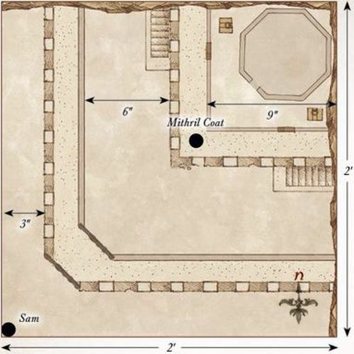
PLATEAU OF GORGOROTH
LAYOUT
The board represents the plateau of Gorgoroth, and as such should be relatively barren with only a few rocks and dead shrubbery dotted around the board.
STARTING POSITIONS
The Good player deploys Frodo and Sam touching the center of the western board edge. The Evil player then deploys their models within 6" of the center of the southern board edge.
OBJECTIVES
Frodo and Sam must bypass the Orcs without being found out. If the Hobbits are discovered, the Orcs will surely kill them.
The game lasts for 10 turns. The Good player wins if Frodo can escape the board via the eastern board edge. The Evil player wins if Frodo is slain.
SPECIAL RULES
- Orc Armour
Frodo and Sam both count as wearing armour and so their Defence characteristics will be increased by 1. Additionally, until they are discovered, Frodo and Sam may move through enemy models as if they weren't there, so long as they do not finish their move in base contact with an enemy model.
- Not here, not so close to the Eye!
Frodo may not put the Ring on in this Scenario.
- On the March
Until the Hobbits are discovered, the Orcs must move at least 2" towards the northern board edge each turn and may not Charge. Evil models that move into base contact with the northern board edge will escape and go off to war. Once per game, after Priority has been determined, the Orc Taskmaster may halt the march in order to whip the Orcs back into line. When this happens, no Evil models will move that turn.
- Discovering the Hobbits
During the End phase of each turn, check to see if either of the Hobbits are within 6" of any enemy models. If so, roll a D6. On a 6, the Hobbits have been discovered and are at the mercy of the Orcs. Additionally, the Hobbits will automatically be discovered if they Charge an enemy model or target an enemy model with their Throw Stones special rule.
PARTICIPANTS
Good: Frodo Baggins in Orc armour; Samwise Gamgee in Orc armour.
Evil: Orc Captain with shield; Orc Taskmaster; 24 Orc Warriors: 8 with shield, 8 with spear, 4 with Orc bow, and 4 with two-handed weapon.
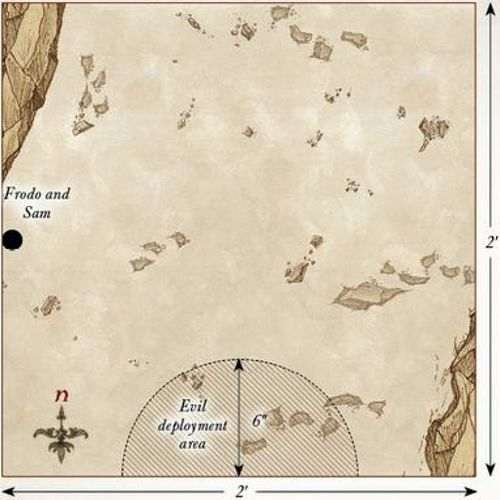
THE END OF ALL THINGS
LAYOUT
This scenario is unusual as it requires two separate playing areas: a 2'x2' area for the Crack of Doom and a 4'x4' area for the Black Gate. The Crack of Doom board should have half of the board representing the outside of Mount Doom with a pathway leading up to the door in the side of the mountain, which then leads to the walkway and the precipice above the lava (see map). The Black Gate board should have the Black Gate running along the eastern board edge while the rest of the board is relatively barren.
STARTING POSITIONS
The Good player deploys Frodo and Sam touching the south-west corner of the Crack of Doom board. They then deploy all the rest of their models within 6" of the center of the Black Gate board. The Evil player deploys all of their models (except Gollum) on the Black Gate board at least 6" away from any Good model.
OBJECTIVES
Frodo must destroy the Ring quickly, or his friends will perish.
The game lasts until either Frodo has destroyed the Ring, is taken over by the Ring, or is slain. The Good player wins if the Ring is destroyed. The Evil player wins if Frodo is either slain or taken over by the Ring. Additionally, if all the Good Heroes at the Black Gate are slain, the best result the Good player can achieve is a draw.
SPECIAL RULES
- Not here, not so close to the Eye!
Frodo may not put on the Ring in this Scenario.
- The Power of the Ring
At the start of each turn, before Priority is rolled, the Evil player may use one of the following powers to try to slow Frodo down and corrupt him. To use one of these powers, the Evil player declares which power they wish to use and rolls a D6. If the score is equal to or higher than the score required, they may use the power:
Exhaustion (3+) — During the turn that this power is in effect, Frodo must take a Courage test for each inch he wishes to move. If Frodo fails any of these Courage tests, he collapses and is immediately Prone. Sam may carry Frodo as a Heavy Object.
Corruption (4+) — The Evil player rolls a D6 and compares it to Frodo's current Courage value. If the result is equal to or higher than Frodo's Courage value, then Frodo's Courage is reduced by 1 for the remainder of the game. If Frodo's Courage is reduced to 0, he has been taken over by the Ring and the game ends.
Lure of the Ring (5+) — The Ring provokes Gollum to attack, and he is placed in base contact with the Ringbearer. They will fight as normal during the Fight phase before Gollum disappears back into hiding. If Gollum is ever slain, this power can no longer be used.
- Destroying the Ring
To destroy the Ring, Frodo must be in base contact with the edge of the precipice over the lava. Frodo will then enter a battle of wills with the Ring. Both players roll a D6 (re-rolling any ties) and compare results. If the Good player wins this roll three times in a row, the Ring is destroyed. If the Evil player wins this roll three times in a row, the Ring corrupts Frodo and the game ends. Frodo may use Might to influence these rolls.
- Gandalf's Staff
Gandalf does not have his Staff of Power, and therefore does not gain a free point of Will each turn.
- Teeming Hordes
Each time a Mordor Orc model is slain, keep it to one side. At the end of each Evil Move phase, the Evil player may move any models kept aside in this manner onto the board from the Black Gate.
- Stand your Ground
Good models may not willingly move more than 12" away from the center of the Black Gate board.
- Greatest of the Trolls
The Mordor Troll Chieftain gains the Fearless special rule and an additional point of Might, Will, and Fate.
PARTICIPANTS
Good: Frodo Baggins; Samwise Gamgee with Sting; Aragorn, King Elessar; Gandalf the White; Legolas Greenleaf; Gimli, son of Glóin; Meriadoc, Knight of the Mark, with shield; Peregrin, Guard of the Citadel; Éomer, Marshal of the Riddermark; 25 Warriors of Minas Tirith: 8 with shield, 8 with spear and shield, 8 with bow, and 1 with banner; 25 Warriors of Rohan: 8 with shield, 8 with throwing spear and shield, 8 with bow, and 1 with banner.
Evil: Mordor Troll Chieftain; The Mouth of Sauron on armoured horse; Gollum; 3 Morannon Orc Captains with shield; 50 Morannon Orcs: 12 with shield, 12 with spear, 12 with spear and shield, 12 with no additional wargear, and 2 with banner.
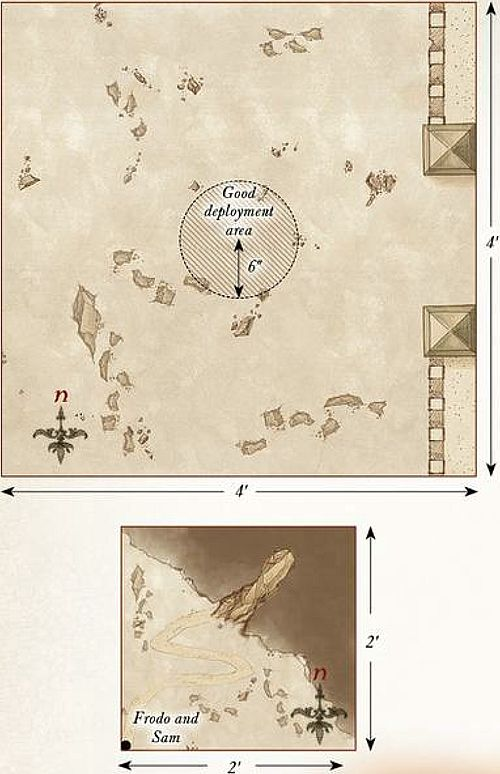